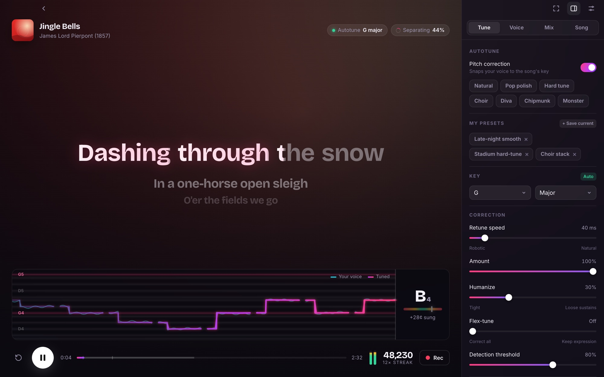

Sing anything.
Sound incredible.
Free, open-source karaoke for your computer. Search any song, hit start, and sing over the instrumental with synced lyrics and a real-time autotune. All you need is an internet connection.

An on-device AI pulls the vocals out of the original recording, so it works for every song, not just ones with karaoke versions.
Low-latency pitch correction with retune speed, humanize, flex-tune, vibrato, formant control and harmonies.
The music is cut from the same recording the lyrics are timed to, so every word lines up, wiped word by word as you sing.
Record a take, loop it and dial in your sound before you sing, then save it as your own preset.
Gate, EQ, de-esser, compressor, echo and reverb, plus key and tempo changes for the music.
Save your performance as a WAV with latency compensation, and get scored on your pitch accuracy.